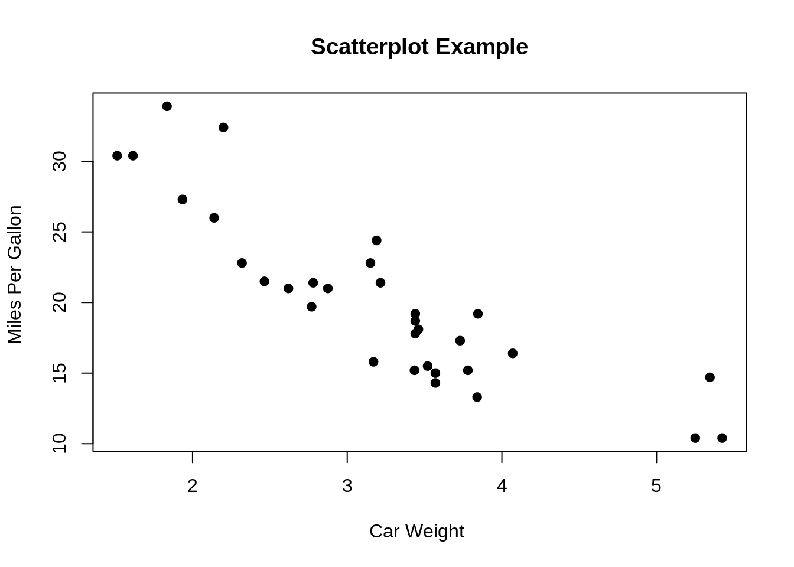
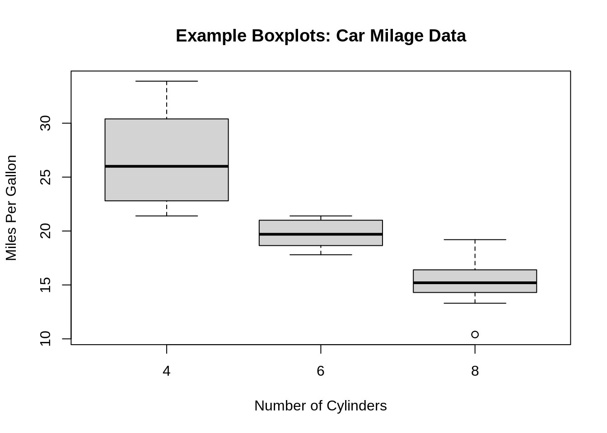
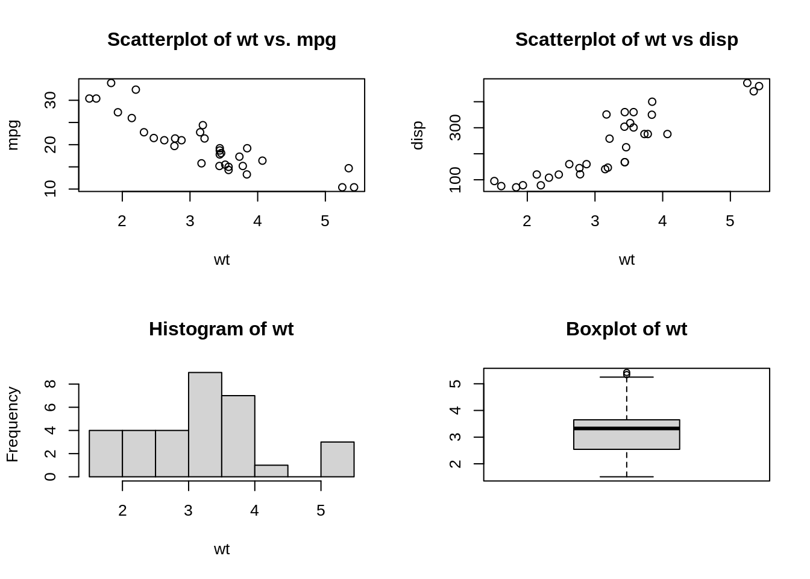
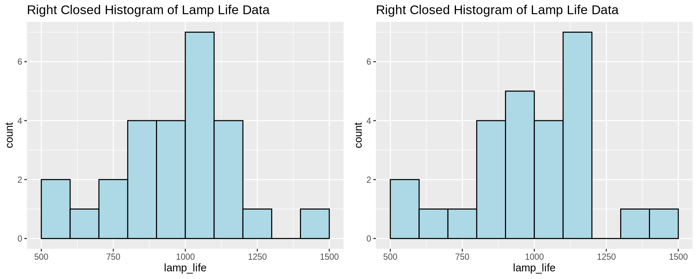

Chapter 31 Interview questions for data visualization
Ivy Liu
31.0.1 General Questions
31.0.1.1 Question1: What is data modeling?
Data modeling is the analysis of data objects that are used in a business or other context and the identification of the relationships among these data objects. Data modeling is the first step in performing object-oriented programming.
31.0.1.2 Question2: What are the steps involved in a data analysis process}
- Data exploration
- Data preparation
- Data modeling
- Validation
- Implementation of model and tracking
31.0.1.3 Question3: Why is data cleansing important for data visualization?
Data cleansing is used for identifying and removing errors and inconsistencies from data in order to enhance the quality of data. This process is crucial and emphasized because wrong data can lead to poor analysis. This step ensures the quality of the data is met to prepare data for visualization.
31.0.1.4 Question4: Explain what should be done with suspected or missing data?
Prepare a validation report that gives information of all suspected data. It should give information like validation criteria that it failed and the date and time of occurrence.
Experience personnel should examine the suspicious data to determine their acceptability.
Invalid data should be assigned and replaced with a validation code.
To work on missing data use the best analysis strategy like deletion method, single imputation methods, mean/median/mode imputation, model based methods, etc.
31.0.1.5 Question5: What are some important features of a good data visualization?
The data visualisation should be light and must highlight essential aspects of the data; looking at important variables, what is relatively important, what are the trends and changes. Besides, data visualisation must be visually appealing but should not have unnecessary information in it.
One can answer this question in multiple ways: from technical points to mentioning key aspects, but be sure to remember saying these points:
- Data positioning
- Bars over circle and squares
- Use of colour theory
- Reducing chart junk by avoiding 3D charts and eliminating the use of pie charts to show proportions
- why sunburst visualization is more effective for hierarchical plots
31.0.1.6 Question6: What is a scatter plot? For what type of data is scatter plot usually used for?
A scatter plot is a chart used to plot a correlation between two or more variables at the same time. It’s usually used for numeric data.

31.0.1.7 Question7: What features might be visible in scatterplots?
Correlation: the two variables might have a relationship, for example, one might depend on another. But this is not the same as causation.
Associations: the variables may be associated with one another.
Outliers: there could be cases where the data in two dimensions does not follow the general pattern.
Clusters: sometimes there could be groups of data that form a cluster on the plot.
Gaps: some combinations of values might not exist in a particular case.
Barriers: boundaries.
Conditional relationships: some relationship between the variables rely on a condition to be met.
31.0.1.8 Question8: What type of plot would you use if you need to demonstrate “relationship” between variables/parameters?
When we are trying to show the relationship between 2 variables, scatter plots or charts are used. When we are trying to show “relationship” between three variables, bubble charts are used.
31.0.1.9 Question9: When will you use a histogram and when will you use a bar chart? Explain with an example.}
Both plots are used to plot the distribution of a variable. Histograms are usually used for a categorical variable, while bar charts are used for a categorical variable.
31.0.1.10 Question10: What is an outlier?
The outlier is a commonly used terms by analysts referred for a value that appears far away and diverges from an overall pattern in a sample. There are two types of outliers: univariate and multivariate.
31.0.1.11 Question11: What type of data is box-plots usually used for? Why?
Boxplots are usually used for continuous variables. The plot is generally not informative when used for discrete data. 
31.0.1.12 Question12: What information could you gain from a box-plot?
- Minimum/maximum score
- Lower/upper quartile
- Median
- The Interquartile Range
- Skewness
- Dispersion
- Outliers
31.0.1.13 Question13: When do you use a boxplot and in what situation would you choose boxplot over histograms.}
Boxplots are used when trying to show a statistical distribution of one variable or compare the distributions of several variables. It is a visual representation of the statistical five number summary.
Histograms are better at determining the probability distribution of the data; however, boxxplots are better for comparison between datasets and they are more space efficient.
31.0.1.14 Question14: When analyzing a histogram, what are some of the features to look for?
- Asymmetry
- Outliers
- Multimodality
- Gaps
- Heaping/Rounding: Heaping example: temperature data can consist of common values due to conversion from Fahrenheit to Celsius. Rounding example: weight data that are all multiples of 5.
- Impossibilities/Errors
31.0.1.15 Question15: What type of data is histograms usually used for?
Continuous data
31.0.1.16 Question16: What is the difference between count histogram, relative frequency histogram, cumulative frequency histogram and density histogram?
Count: the vertical (y) axis shows the frequency/count of data that falls within each bin
Relative frequency: the vertical (y) axis shows the relative frequency of data that falls within each bin. Relative frequency can be calculated by dividing the frequency by the total frequency (total count). Hence, the height of the bars sum up to 1.
Cumulative frequency: it shows the accumulation of the frequencies. Each vertical (y) axis shows the frequency of data in the corresponding bin and all the previous ones.
Density: the vertical (y) axis is calculated by dividing the relative frequency by the bin width. Hence, the area of the bars sum up to 1.
31.0.1.17 Question17: What is nominal data and ordinal data? Explain with examples.}
Nominal data is data with no fixed categorical order. For example, the continents of the world (Europe, Asia, North America, Africa, South America, Antarctica, Oceania).
Ordinal data is data with fixed categorical order. For example, customer satisfactory rate (Very dissatisfied, dissatisfied, neutral, satisfied, very satisfied).
31.0.1.18 Question18: What are some advantages of using cleveland dot plot versus bar chart?
Cleveland plot takes up less space for data with many categories. Within a given space, one can fit more dots than bars.
Cleveland plot can show two different sets of values on the same line.
31.0.1.19 Question19: How do you determine the color palette in your plots?
Depends on whether the data is discrete or continuous, I would choose different color scheme. For example, if the data is nominal, I would chose qualitative palette where there is no progression, but if the data is continuous, I would choose a sequential or perceptually uniform color palette.
To avoid using colors that causes confusion or unintended emphasis on part of the data, I usually use the existing palettes in the software packages. For example in R, there is RColorBrewer.
When I am presenting my data visualizations, I would try to make my graphs color vision decency (CVD) friendly.
31.0.2 R Questions
31.0.2.1 Question20: List 3 libraries in R that can be used for data visualization.}
ggplot2, Lattice, Leaflet, Highcharter, RColorBrewer, Plotly, sunburstR, RGL, dygraphs
31.0.2.2 Question21: How do you make multiple plots to a single page layout in R?
Use the function \(par(mfrow=c(n,m))\). For example, \(par(mfrow=c(2,2))\) can be used to capture a 2 X 2 plot in a single page.
par(mfrow=c(2,2))
plot(wt,mpg, main="Scatterplot of wt vs. mpg")
plot(wt,disp, main="Scatterplot of wt vs disp")
hist(wt, main="Histogram of wt")
boxplot(wt, main="Boxplot of wt")
31.0.2.3 Question22: What is the lattice package in R used for?
Lattice is mainly used for multivariate data and relationships. It supports trellis graphs, which displays a variable or the relationship between variables, conditioned on one or more other variables.
31.0.2.4 Question23: Can pots be exported as image files or other file formats in R?
Yes, plots could be saved as images directly from R using an editor such as RStudio. This way of saving, however, does not provide much flexibility. If we want to customize our images, we need to have an approach as to how to export plots from the R code itself.
We can use “ggsave” function to accomplish this.
We can save the plots in different formats such as jpeg, tiff, pdf, svg etc. We can also use various parameters to change the size of the image prior to exporting it or saving it in a path or location.
Saving as jpeg format \[ggsave(filename = “PlotName1.jpeg”, plot=Image\_plot )\]
Saving as tiff format \[ggsave(filename = “PlotName1.tiff”, plot=Image\_plot )\]
Saving as pdf format \[ggsave(filename = “PlotName1.pdf”, plot=Image\_plot )\]
Saving as tiff format with change in size \[ggsave(filename = “PlotName1.tiff”, plot=Image\_plot , width=14, height=10, units=”cm”)\]
31.0.2.5 Question24: What are the key components or grammar for the visualization in the ggplot2 library in R?
Every visualization in ggplot2 package in R comprises of the following key aspects:
- Data – The raw material of your visualization
- Layers – What you can see or visualize on plots (i.e. lines, points, maps etc.)
- Scales – Maps the data to graphical output
- Coordinates – This is from the visualization perspective (i.e. grids, tables etc.)
- Faceting – Provides “visual drill-down” into the data
- Themes – Controls the details of the display (i.e. fonts, size, colour etc.)
31.0.2.6 Question25: Why is it important to tidy data?
Tidy data is a standard way of mapping the meaning of a dataset to its structure. A dataset is messy or tidy depending on how rows, columns and tables are matched up with observations, variables and types. In tidy data:\
- Each variable forms a column.
- Each observation forms a row.
- Each type of observational unit forms a table.
Tidy data makes it easy for an analyst or a computer to extract needed variables because it provides a standard way of structuring a dataset. Compare the different versions of the classroom data: in the messy version you need to use different strategies to extract different variables. This slows analysis and invites errors.
(source: https://cran.r-project.org/web/packages/tidyr/vignettes/tidy-data.html)
31.0.2.7 Question26: How do you import data in R}
One can import data from a text file, csv, excel, SPSS, SAS, etc. in R.
R base functions that can be used include: \(read.table()\), \(read.delim()\), \(read.csv()\), \(readcsv2()\). We could also use the \(readr\) package to fast read data.
Reading from excel requires either \(readxl\) or \(xlsx\) package, and for SPSS and SAS, one could use the \(Hmisc\) package.
31.0.2.8 Question27: How missing values and impossible values are represented in R ?
NaN (Not a Number) is used to represent impossible values whereas NA (Not Available) is used to represent missing values.
Usually, simply deleting missing values is not a good idea because the probable cause for missing value could be some problem with data collection or programming or the query. It is good to find the root cause of the missing values and then take necessary steps handle them.
31.0.2.9 Question28: What are the building blocks for graphing with ggplot2?
- Layers: a plot of the dataset
- Scale: normal, logarithmic, etc.
- Coord: coordinate system
- Facet: multiple plots
- Theme: the looks of the overal graph
31.0.2.10 Question29: Two students plotted histograms for the exact same data in R with the same bin width and boundary values, however their plots have completely different shape. What could be the cause of this?
This is probably due to the fact that the one plot is right closed, the other is right open, so that the data points that fall on the boundaries are put into different bins.
This kind of difference can be eliminated by choosing boundary values that cannot occur in the dataset; for example, we can use higher precision decimal values.
Example data:
780, 1100, 940, 900, 1170, 900, 950, 905, 1340, 1122, 900, 970, 1009, 1157, 1151, 1009, 1217, 1080, 896, 958,
1153, 900, 860, 1070, 800, 1070, 909, 1100, 940, 1110, 940, 1122, 1100, 1300, 1070, 890, 1106, 704, 500, 500,
620, 1500, 1100, 833, 1300, 1011, 1100, 1140, 610, 990, 1058, 700, 1069, 1170, 700, 900, 700, 1150, 1500, 950

31.0.2.11 Question30: In R, we can use the \(read\_html\) function to easily scrape data from websites. What are some of the caveats of web scraping (ethically and legally)?
- Think and investigate legality of scraping the data
- Think about whether the use of the data is ethical
- Limit bandwidth use
- Scrape only what you need
31.0.2.12 Question32: What are factors in R and why is it useful?
Factors are the data objects which are used to categorize the data and store it as levels. They can store both strings and integers. They are useful in the columns which have a limited number of unique values. Like “Male,”Female" and True, False etc. They are useful in data analysis for statistical modeling.
31.0.2.13 Question32: What is Rmarkdown? What is the use of it?
RMarkdown is a tool provided by R to create dynamic documents and reports that contain shiny widgets and outputs from R. An R Markdown document is written in markdown (an easy-to-write plain text format) and contains chunks of embedded R code.
31.0.2.14 Question33: What are some common functions in the “dplyr” package?
filter, select, mutate, arrange and count.
31.0.3 Python Questions
31.0.3.1 Question34: What is pandas?
Pandas is a Python open-source library that provides high-performance, powerful and flexible data structures and data analysis tools. It is built on top of Python programming language.
31.0.3.2 Question35: What libraries do data scientists use to plot data in Python?
Matplotlib is the main library used for plotting data in Python. However, the plots created with this library need lots of fine-tuning to look shiny and professional. For that reason, many data scientists prefer Seaborn, which allows you to create appealing and meaningful plots with only one line of code.
31.0.3.3 Question36: Name a few libraries in Python used for Data Analysis and Scientific computations.?
NumPy: It is used for scientific computing and performing basic and advanced array operations. It offers many handy features performing operations on n-arrays and matrices in Python. It helps to process arrays that store values of the same data type and makes performing math operations on arrays (and their vectorization) easier.
SciPy: This useful library includes modules for linear algebra, integration, optimization, and statistics. Its main functionality was built upon NumPy, so its arrays make use of this library.
Pandas: This is a library created to help developers work with “labeled” and “relational” data intuitively. It’s based on two main data structures: “Series” (one-dimensional, like a list of items) and “Data Frames” (two-dimensional, like a table with multiple columns).
SciKit: Scikits is a group of packages in the SciPy Stack that were created for specific functionalities – for example, image processing. Scikit-learn uses the math operations of SciPy to expose a concise interface to the most common machine learning algorithms.
Matplotlib: This is a standard data science library that helps to generate data visualizations such as two-dimensional diagrams and graphs (histograms, scatterplots, non-Cartesian coordinates graphs).
Seaborn: Seaborn is based on Matplotlib and serves as a useful Python machine learning tool for visualizing statistical models – heatmaps and other types of visualizations that summarize data and depict the overall distributions.
Plotly: This web-based tool for data visualization that offers many useful out-of-box graphics – you can find them on the Plot.ly website. The library works very well in interactive web applications.
31.0.3.4 Question37: Which library would you prefer for plotting in Python language: Seaborn or Matplotlib?
Matplotlib is the python library used for plotting but it needs lot of fine-tuning to ensure that the plots look shiny.
Seaborn helps data scientists create statistically and aesthetically appealing meaningful plots. The answer to this question varies based on the requirements for plotting data.
31.0.4 Tableau Questions
31.0.4.1 Question38: What does Tableau do?
Tableau is a visual analytics engine that makes it easier to create interactive visual analytics in the form of dashboards. It empowers people and organizations to make the most of their data and solve problems.
31.0.4.2 Question39: In Tableau, how is the Context Filter different from other Filters?
When we create a Context Filter, Tableau will create a temporary table for this particular Filter set and other Filters will be applied on the Context Filter data like cascade parameters.
Suppose, we have created a Context Filter on countries, USA and India, Tableau will create a temporary table for these two countries’ data and if we have any other Filters other will be applied on these two countries’ data if we don’t have any Context Filter, each record will check for all Filters.
31.0.4.3 Question40: In Tableau, what is the disadvantage of Context Filters?
The Context Filter is not frequently changed by the user—if the Filter is changed, the database must be recomputed and the temporary table has to be rewritten, slowing performance.
When we set a dimension to context, Tableau creates a temporary table that will require a reload each time the view is initiated. For Excel, Access, and text data sources, the temporary table created is in an Access table format. For SQL Server, MySQL, and Oracle data sources, we must have permission to create a temporary table on our server. For a multidimensional data source, or cubes, temporary tables are not created, and Context Filters defined which Filters are independent and which are dependent.
31.0.4.4 Question41: What are Filters? How many types of Filters are there in Tableau?
The filters can be applied in a worksheet to restrict the number of records present in a dataset, especially for unnecessary data; and it shows the exact data we want.
There are various types of filters available in Tableau.
Extract Filters: Extract filters are used to apply filter on extracted data from the data source. For this filter, data is extracted from the data source and placed into the Tableau data repository.
Datasource Filters: Using the data source filters in tableau, we can directly apply our filter conditions on the data source. It filters the data at the data source and then uploads only the remaining data in the Tableau worksheet. But, the only difference is it works with both live and extract connection.
Context Filters: By using context filters in tableau, we can apply a general context to our overall analysis of Tableau.
Dimension Filters: The dimension filters are the filters that we apply on individual dimensions. Dimensions are not aggregated and so, we can select distinct values from the list of field values.
Measure Filters: The measure filters are the filters that we apply using the measure field values. Measure values are always aggregated like sum, average, median, etc.
(source: https://data-flair.training/blogs/tableau-filters/)
31.0.4.5 Question42: What is the difference between heat map and treemap in Tableau?
A heat map is a great way to compare categories using color and size. In this, we can compare two different measures.
A treemap is used for illustrating hierarchical (tree-structured) data and for visualizing a part of or a whole relationship.
31.0.4.6 Question43: What are the main features of Tableau?
Tableau Dashboard: Tableau Dashboards provide a wholesome view of your data by the means of visualizations, visual objects, text, etc. Dashboards are very informative as they can present data in the form of stories, enable the addition of multiple views and objects, provide a variety of layouts and formats, enable the users to deploy suitable filters.
Collaboration and Sharing: Tableau provides convenient options to collaborate with other users and instantly share data in the form of visualizations, sheets, dashboards, etc. in real-time. It allows you to securely share data from various data sources such as on-premise, on-cloud, hybrid, etc. Instant and easy collaboration and data sharing help in getting quick reviews or feedback on the data leading to a better overall analysis of it.
Live and In-memory Data: Tableau ensures connectivity to both live data sources or data extraction from external data sources as in-memory data. This gives the user the flexibility to use data from more than one type of data source without any restrictions. You can use data directly from the data source by establishing live data connections or keep that data in-memory by extracting data from a data source as per their requirement.
Data Sources in Tableau: Tableau offers a myriad of data source options you can connect to and fetch data from. Data sources ranging from on-premise files, spreadsheets, relational databases, non-relational databases, data warehouses, big data, to on-cloud data are all available on Tableau.
Advanced Visualizations (Chart Types): In Tableau, you can make visualizations as basic as a bar chart or pie chart. You can also make more advanced visualization as histogram, gantt chart, bullet chart, motion chart, treemap and boxplot.
Maps: Tableau has a lot of pre-installed information on maps such as cities, postal codes, administrative boundaries, etc. This makes the maps created on Tableau very detailed and informative.
Trend Lines and Predictive Analysis: Easy creation of trend lines and forecasting is possible due to Tableau’s powerful backend and dynamic front end. You can easily get data predictions such as a forecast or a trend line by simply selecting some options and drag-and-drop operations using your concerned fields.
(source : https://data-flair.training/blogs/tableau-features/)
31.0.4.7 Question44: What are Histograms in Tableau? What is its use in analysis?
Histograms show or graphically represent the distribution of values in intervals or bins of equal sizes. These charts are specifically used to represent the distribution of continuous data.
Histogram in Tableau takes the continuous measure values and places them into bins of equal sizes.
31.0.4.8 Question45: Explain Bar charts in Tableau. What are the different kinds of Bar Charts?
Bar charts represent data in categories by using rectangular bars, whose height is proportional to the value that bar is representing.
In Tableau, we can make different kinds of bar charts such as; Segmented bar chart, Stacked bar chart, Side-by-side bar chart etc.
Horizontal/ Vertical bar chart: A horizontal or vertical bar graph is a simple graph having bars of vertical or horizontal orientation.
Segmented bar chart: A segmented bar chart is a bar chart where a bar chart contains more than one set of bars. Each set of bars belongs to a particular segment. For instance, we can have a sales bar graph for three or four different segments all seen in a single view.
Stacked bar chart: A stacked bar chart has a single bar divided into smaller parts. For instance, a single bar for the year 2019 can show sales for different countries or regions or cities. We can also set a color scheme for the subdivisions in a bar as we can see in a stacked bar chart below.
Side-by-side bar chart: A side-by-side bar chart will have multiple bars standing next to each other for a single segment.